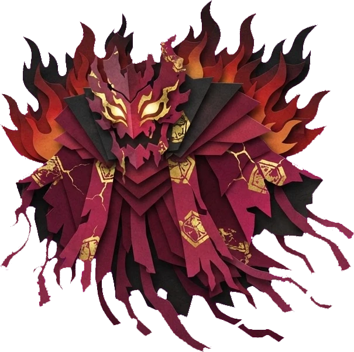
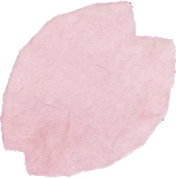
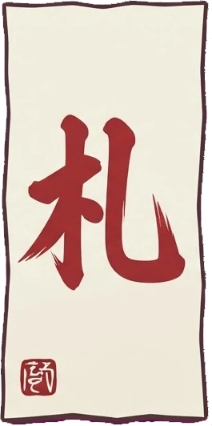
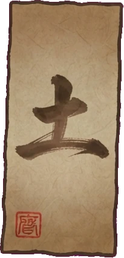
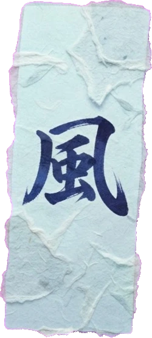
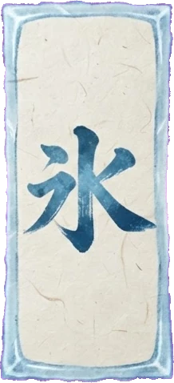
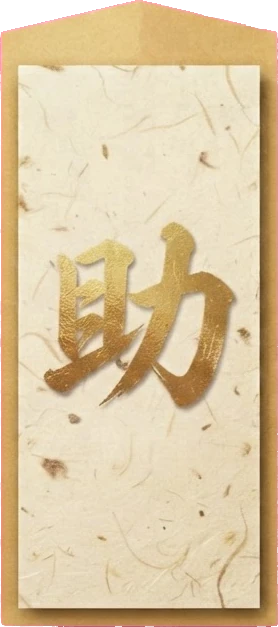
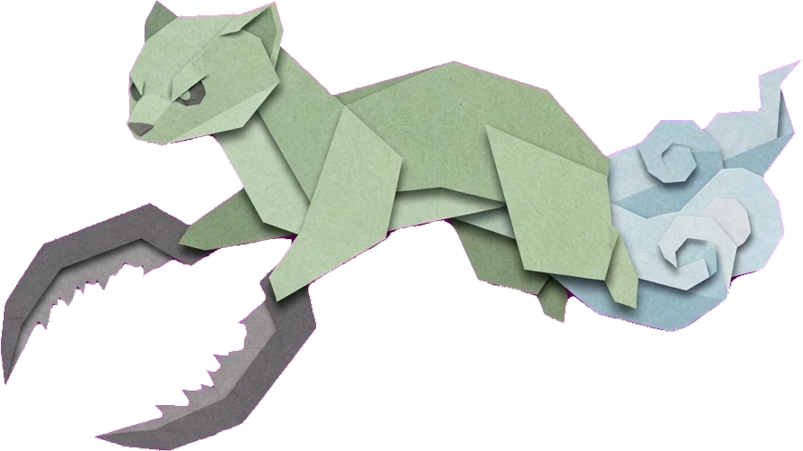

第一章
社の参道
鳥居から本殿へ続く参道。鬼火と大入道の行進を止め、荒魂に挑む。

遊ぶたびに、少しずつ強く、少しずつ奥へ。
毎ターン配られるお札から選んで置く、シンプルで奥の深い配置の戦い。壁で敵を誘導して、射程に誘い込もう。
稼いだ通貨でスキルの木を育てる。奥へ進むほど、新しい札や力が姿を見せる。
強敵を倒すと授かる不思議な力。何を選ぶかで、その周回の戦い方が変わる。
札の精が、遊び方や敵の弱点をやさしく教えてくれる。初めてでも安心。
まずは、この六種から。遊び進めると、まだ見ぬ札が現れる。

基本の札一番使い慣れた札だよ。特別な効果はないけど、安定した連射でコツコツ攻められるんだ。
土の札攻撃はできないけど、敵の足止めをしてくれる頼れる壁だよ。強化すると最初に触れた敵を捕まえられるんだ。
風の札当たった敵を吹き飛ばして時間を稼ぐよ。速い敵への対策にぴったりなんだ。
氷の札命中した敵の動きを鈍らせるよ。他の札と組み合わせるとより効果的なんだ。
支援の札近くの札の力を高めてくれる縁の下の力持ちだよ。他の札と一緒に置いてこそ輝くんだ。物語は三つの章。各章の最後には、強敵が待っている。

社の参道
鳥居から本殿へ続く参道。鬼火と大入道の行進を止め、荒魂に挑む。
？ ？ ？
先へ進んだ者だけが知る。
？ ？ ？
先へ進んだ者だけが知る。
第一章に現れる妖怪たち。弱点や耐性は、案内役が教えてくれる。
一撃で散る雑霊。群れで押し寄せてくる。
基本の妖怪。数で押してくる。
硬くてゆっくり。倒せば大きな通貨。

鎌鼬速くて、お札を斬りつけてくる。
荒ぶる魂。範囲攻撃と雑魚の召喚を使う。
遊びの途中で、そっと声をかけてくれる。
操作は、選んで、置いて、見守るだけ。
毎ターン配られるお札から選び、フィールドの好きな場所へ。スマホは札をそのままドラッグして置ける。
「ウェーブ開始」で妖怪が押し寄せる。本殿に着かれたら負け。壁で足止めして、射程に誘い込もう。
倒した妖怪から通貨が手に入る。スキルの木を育てて、次の周回へ。
強敵を倒すと、不思議な力を授かる。選んだ力に合わせて札を選び、どこまで行けるか試そう。